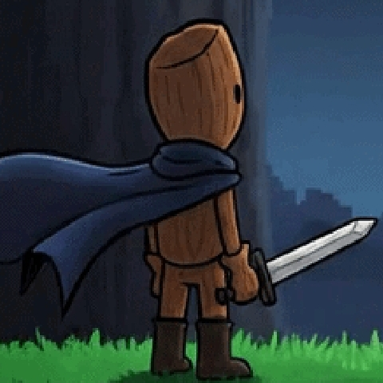
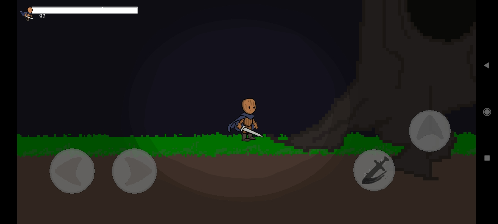

Onde o silêncio esconde verdades dolorosas.
Tudo começou com o "Grande Apagão". A floresta era mantida viva por sete Amuletos de Brilho que serviam como o coração do ecossistema. Sem aviso, uma força corrupta estilhaçou o selo e roubou as relíquias. No instante em que o último amuleto foi removido, a rede mágica da floresta entrou em colapso...
Cerne não foi planejado. Ele foi o resultado de uma sobrecarga mágica em um objeto inanimado. No momento em que a madeira se levantou, a floresta já estava morrendo. Ele abriu os olhos (duas fendas negras) e percebeu que sua existência era um parasita...
Sua missão é recuperar os sete amuletos e levá-los de volta ao Altar Central. Ele sabe que no segundo em que o brilho total for restaurado, o vácuo energético que o sustenta deixará de existir. Ele é o erro que precisa ser cometido para que a perfeição retorne.
Veja o mundo de Silent Bark em ação:
